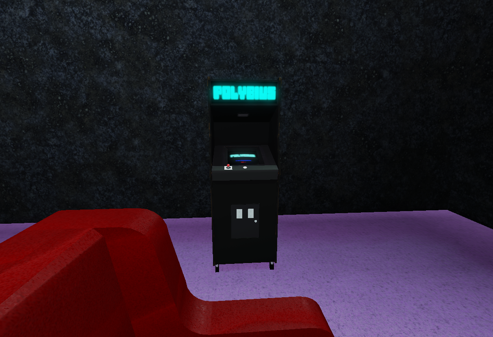

⌂

Polybius in the living room, picture taken from sofa.
Polybius. The urban legend, told all throughout the years of arcade game popularity.
Said to have mind controlling abilities, having turned many people insane with hypnotic and epileptic imagery.
Found in a ware shop behind an old abandoned arcade,
this interesting friend appears to be filled with something...other than motherboards and computer chips.
At first glance they seemed unresponsive but after some time, they revealed themselves!
A friendly and playful fellow indeed, something you'd expect from an arcade machine.
But there is something very important to mention: He HATES cheaters.
Edit: Someone in the collection team appears to be attracted to them...-Kat